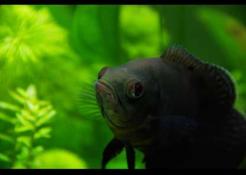
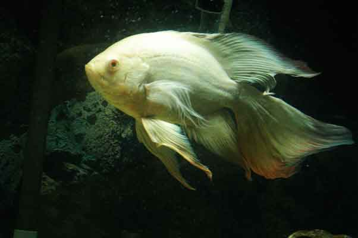
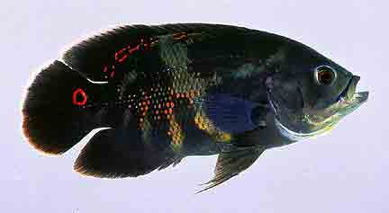
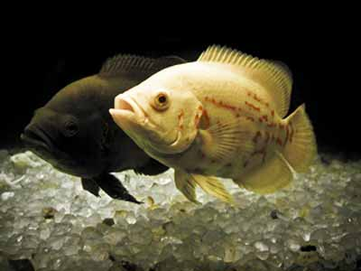

Oscars
A GUIDE TO CARING & BREEDING OSCAR FISH

Oscars are considered to be the most intelligent aquarium fish available to hobbyists.
Oscars have an impeccable memory and are one of the few aquarium pets that
can be trained to do tricks and individually distinguish its carer. Oscars
are often available in a few different colors. The most popular being black
with bright red scale colorations through its center. Other less common variations
include a bright albino white with translucent red eyes, shades of pale blue and
even banana yellow.
Unfortunately Oscars not community fish with the
exception of being kept with other big fish in a very large tank. Before
purchasing this ‘tiny’, ‘cute’ little fish in the pet store,
it is important to realize that they grow very big, very fast.
Oscars are often bought at the size of a few inches or less, but
within a year they can grow to be closer to 8” long. At this point
they will be around the size of a small dinner plate.
Oscars
are very messy eaters and constantly defecate there digested food
around the aquarium. This is partly due to their carnivorous nature
and large appetites. To prevent poor water quality, Oscars require
more maintenance than other fish. It is recommended water changes
occur at least twice a week to siphon out excess waste.

Oscars can be a lot of fun when it comes to feeding time. They are one of the few
aquarium species you are able to hand feed. They will often grab the food right
between your fingers! Oscars are not fussy about which foods they are given and for
this reason it is important to feed them a mixed diet of commercial vitamin
boosting foods and live/frozen foods.
Oscars need good water quality as do
most aquarium fish species. Poor water quality will spark noticeable mood
changes, discoloration and lack of appetite. It is important to pick up on
these indicators early, test the water and complete a water change.
Oscars can become angry and aggressive when housed with other species
of aquarium fish. It is highly recommended to keep Oscars in a species
only aquarium. They do well kept in pairs or groups of 4-5+ without too
much trouble. Always try to avoid housing 3 Oscars as two may become
a pair, outcasting the third. It is important to house Oscars together
from a young age. Introducing an Oscar to the aquarium later on can
promote territorial disputes that may never be resolved and result in
constant harassment within the aquarium.
Oscars can be very difficult to breed in captivity. This
is partly due to the difficulty in finding a pair of mature
fertile Oscars. Some hobbyists have reported first time success,
but raising the young can prove to be a challenge. Read below for
more information on breeding.

Temperature ~77°F
- The optimum aquarium temperature for Oscars is around 74°F - 81°F (23°C-27°C).
Try to avoid fluctuations in temperature as Oscars can be sensitive to these
changes.

Size ~12"
- Oscars have been known to grow up to 16" (40cm) and over 3 pounds (1.5kg) -
But usually 12” is their maximum size. Oscars in a 4ft aquarium will
usually grow no larger than 8".

pH ~7.0 | Hardness 12.0
- Keep your pH between about 6 and 8. Oscars will tolerate a range of conditions, usually tap water will suffice.
- Relative water hardness should be between 5dH-20dH. Once again
softer or harder conditions are tolerated by Oscars.

Nitrite 0ppm
- Nitrite should always be 0.

Ammonia 0ppm
- Oscars are very sensitive to ammonia spikes. They will lose color,
hunger and hide in the aquarium. Ensure the tank is understocked and
free from debris.

Nitrate >40ppm
- Nitrates should always be as close to 0ppm as
possible. Any reading under 40ppm is suitable for keeping Oscars. Elevated levels
can be reduced by adding aquatic plants and increasing the number of water changes.

Adding the Oscars
- Ensure the aquarium has been cycled and chemically tested. Try to ensure that the readings are within the parameters listed above.
- Float the unopened package or plastic bag in the aquarium for 5-10 minutes. This will allow the water in the bag to increase to the same temperature as that in the aquarium. The bags should be filled with oxygen meaning there
is little risk of leaving the fish sealed for a while longer.
- After this process, pour the contents of the bag and the Oscar into a small bucket.
Pour one or two cups of aquarium water into the bucket ever 5 minutes.
Continue this process for 5-6 cups of water.
- Use a soft net to
collect the Oscar from the bucket and gently place it into the aquarium.
Dispose of the water in the bucket and avoid placing it back into the aquarium.

Feeding Oscars
- Oscars enjoy a large variety of foods. They are hailed for eating almost
anything you put into the tank. For this reason it is important to feed
them a balanced diet.
- Live foods such as goldfish or feeder fish
are not nutritionally healthy for Oscars. They are often high in fats
and can also run the risk of infecting your Oscar with disease or parasites.
Ensure any live fish fed to the Oscars have been properly quarantined.
- Live crickets and bloodworm's are an excellent alternative and are more
aligned to an Oscars natural diet.
- Live snacks should be fed in combination with commercial granules,
frozen worms and brine shrimp and beef liver. This will ensure a
healthy and well balanced diet, prolonging the life of the Oscar.

Breeding the Oscar
- Breeding Oscars is slightly harder than most other
freshwater varieties. The most difficult part is pairing two Oscars that like each
other enough to spawn with each other. Oscars pairs chosen for
mating should be at least two years of age. For faster results it is an excellent
idea to purchase an already mated and spawned pair of Oscar's. These will naturally
spawn every month. Be sure to ask for proof of spawning and fry when purchasing.
- Oscars are near impossible to tell the difference in sex. Both types look exactly
the same and there is no difference in size. The only known way to tell, is to
look for the small cone shaped object located around their anal opening.
- If you do not buy a confirmed pair, the next safest option is to buy 6 or
7 juveniles and grow them, allowing them to naturally pick there partners.
This can take time however and if your sole purpose is breeding them,
possibly too much time, as it will only be when they reach 16 month of age
that they are able to successfully spawn.

- You are able to interbreed Oscar types to come out with the most unusual colors. Reds,
Tigers, Albino, Whites, and yellows can all be bred with one another. Look out for pink
or purple fish as these colors are not natural.
- To induce spawning behavior in the Oscars keep the water clean by doing 20-30% water
changes twice every week and siphoning the gravel. Feed the Oscar pair a varied
diet of both live and frozen foods. Crickets, meal worms and quarantined live
fish work great. Do not add feeder fish from the store without first quarantining
the animals as this is the easiest way to introduce disease into the tank. Frozen
brine shrimp, blood worms, beef heart and prawns will also be a great compliment
to their meaty diet.
- The Oscar pair should show signs of mating by
following a distinct change in normal swimming habits. The pair will begin to
slap each others tails against one another, chase each other around the tank and '
lip lock' mouths. This is where it is good to make sure the Oscars are well behaved
and similar sizes. Unfortunately at this point one may become
aggressive and attack the other.
- When this behavior is displayed between the Oscar pair you will need to give the
pair some spawning medium. An excellent choice is offering an upturned dinner plate
to the aquarium. The ceramic surface is suitable for the pair to lay and care for
their spawn. They will clean the surface in preparation to spawning.
- The female Oscar will give birth typically 2-3 days after the mating
ritual (If your Oscars around 12-16 months old it is possible for them to
display breeding behaviour but they are unfortunately not yet mature enough
to spawn). The female will give birth in batches of about 100 eggs and typically
lay about 1000 in total over the period of a few days.
- In the wild spawned Oscar eggs often have a lower level of success rate
and even fewer make it to young adults. In captivity hatching rates and
conversion rates can be much higher. Take this into account when deciding
on rearing tanks.
- The Oscar fry will hatch from the eggs within 72
hours of being laid. It is not uncommon to find all the eggs have
disappeared. This can happen due to the eggs not being fertilized
and the parents consume them. If the Oscar pair feels unsafe or
becomes upset they may also consume their eggs. It is no surprise that time
parents can take a number of attempts to get spawning right.
- Oscar eggs may develop a cotton wool type fungus. This phenomenon will
only occur on unfertilized eggs and unfortunately can spread to the
fertilized stock too. Adding Methylene blue to the aquarium can remove the fungus
but may cause your tank to re-cycle and is best avoided. The parenting pair
will usually pick up on the fungus and consume this portion of the stock.
- Oscar eggs that are fertilized will be a light brown or tan color as a pose
to the white color of unfertilized eggs.
- Before the eggs hatch,
decide if you want to raise the fry with the adult Oscars and risk them
being consumed, or move them to another tank for rearing. Choosing the
latter will require more space but will greatly increase their chance
of survival.
- If you move the eggs to another tank before
they hatch be sure to use the same water from the large tank,
and expect the parenting pair to defend when you remove their
eggs. Place the eggs into a container without exposing them to
the air and then into the new aquarium. Leave them there to
hatch.
- The eggs will take about 72 hours to hatch.
Closer to hatching the fry can be visibly seen moving
within their shells. For the initial four days the Oscar
fry have an egg sack that they will consume and do not
require any feeding. After the fourth day they will
require supplemental feeding. Start with insofuria
and move to baby brine shrimp within a week. Be sure
to feed them 3 times a day removing any excess food
and waste in the aquarium.
- In the wild, Oscar fry generally stay by
their parents side up to the size of 1".
In the aquarium, young Oscars will need to be
removed from their parents around this time
as the parent Oscars can become territorial
and aggressive. At the size of 2" they are
able to be sold or distributed to pet stores
and friends.
- In unfortunate circumstances none of the
eggs hatch. If this is a continual problem it may be
the result of sterile fish. Do not be disheartened,
find a new pair of Oscars and start once more.